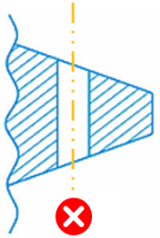
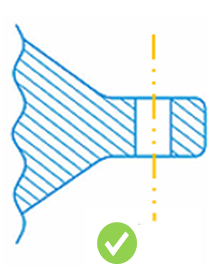
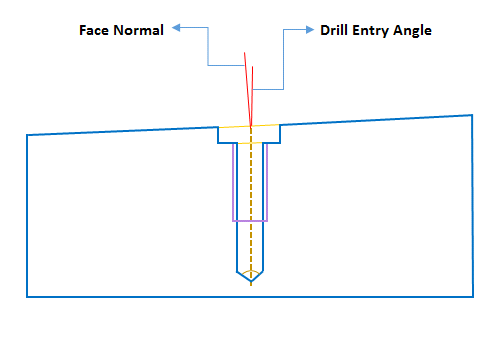
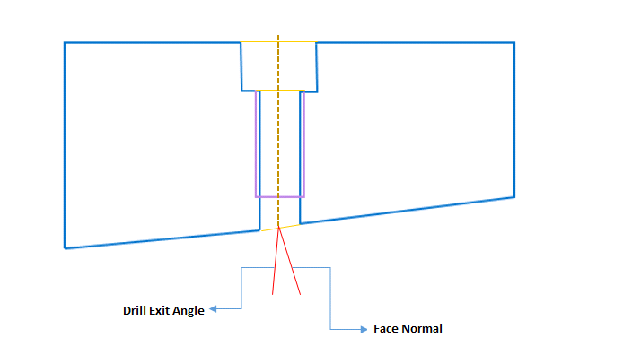
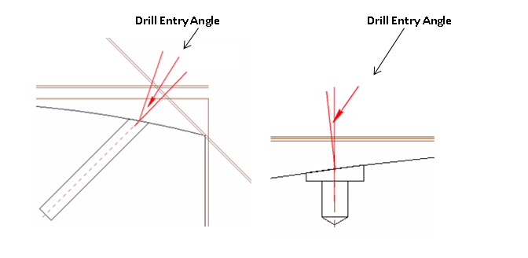
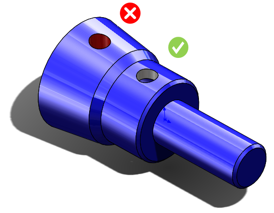

穴は、入口面および出口面が穴軸に対して垂直になる位置にドリル加工する必要があります。


本ルールでは、各穴について（貫通穴の場合）穴の開始面および終了面をチェックします。そのため、構成情報は不要です。
注記:
ルール構成では、許容される角度偏差（ドリル軸と、ドリル入口面または出口面の法線とのなす角度）を指定できます。デフォルトでは、顧客標準に基づいてこのチェックボックスは無効化されていますが、ユーザーが値を追加することが可能です。
ドリル入口角度: ドリル入口面における、ドリル軸と面法線とのなす角度です。この角度はドリル中心点で算出されます。

ドリル出口角度: ドリル出口面における、ドリル軸と面法線とのなす角度です。この角度はドリル中心点で算出されます。



注記:
ドリル工具はデータベースで構成されています。ルールマネージャーダイアログボックスでドリル径を確認するには、標準穴径を編集してください。
最大ドリル工具径は、標準穴径ルール構成で選択されている単位選択オプションに基づいて解析に考慮されます。